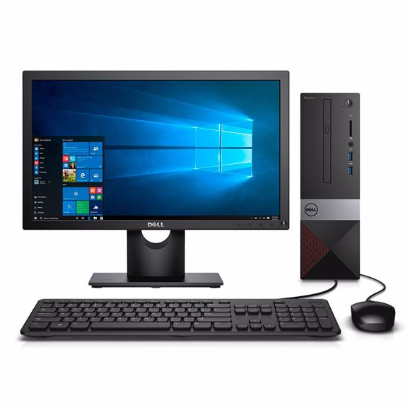
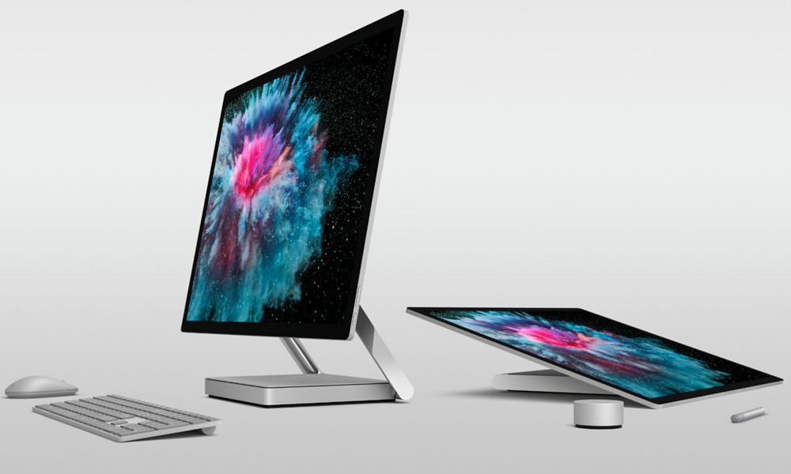
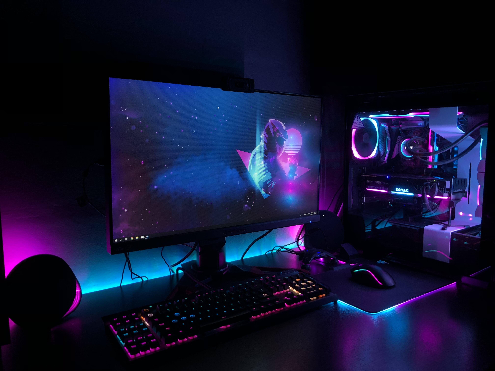

Los ordenadores hoy en día son las máquinas más utilizadas en el mundo, ya que estas prestan múltiples funciones en los colegios, en las empresas, en las fábricas, en los centros comerciales, donde quieras que vayas las podras encontrar. Estas nos sirven para cosas básicas como escribir documentos, como también para tareas más complejas como desarrollar aplicaciones o diseñar imágenes en tercera dimensión (3D). En las oficinas podemos ver en cualquier lugar computadoras, pero eso sí, van a tener características para trabajos de ofimática como lo es word, excel, power point, etc. Estas computadoras poseen procesadores económicos, es decir que estén diseñados para realizar tareas básicas, tampoco van a necesitar una cantidad significativa de memoria sino al igual que el procesador, necesitan de una cantidad básica, como lo vienen siendo 4GB.
Por otra parte nos encontramos con los ordenadores utilizados para el diseño gráfico y para el desarrollo de software, los que necesitan de un rendimiento más potente que los básicos. Estos ordenadores necesitan procesadores con un muy buen rendimiento para correr diversos programas. También deben de hacer uso de targetas de video externas, para mejorar el procesamiento de gráficos, por último deben poseer una buena cantidad de memoria para ejecutar correctamente cualquier programa, la base de estos viene siendo 16GB. Estos modelos de computadores son los segundos más utilizados en el mundo, debido a que hay mucha demanda en el campo del desarrollo de software y del diseño gráfico.
Por último tenemos los equipos para gaming, estos ordenadores son especiales para juegos, ya que poseen un rendimiento excepcional, son los ordenadores deseados por muchos, esto se debe a sus asombrosos acabados, sus componentes vienen decorados con luces RGB, los procesadores de estos equipos son los más premium que se pueden encontrar hoy en día con frecuencias de hasta 4,5GHz, las memorias son de gran cantidad, el valor base es de 32GB para poder ejecutar todo tipo de juegos, y por último una targeta de video externa de última generación para mantener una cantidad de fotogramas estable y una resolución épica. Estos equipos son muy característicos por sus diseños atractivos y extravagantes, pero mucho más por su precio, ya que el costo de estos es muy elevado.
